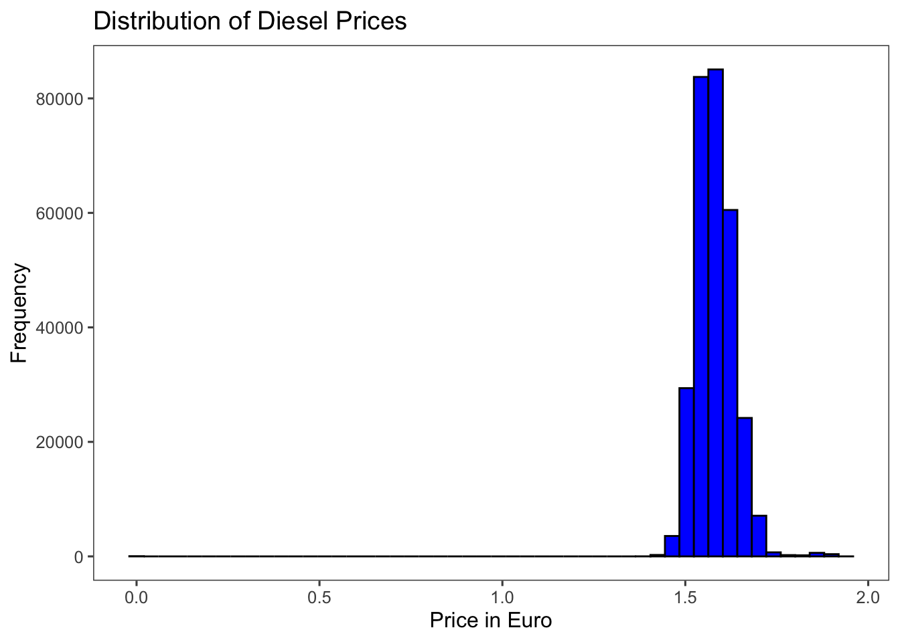
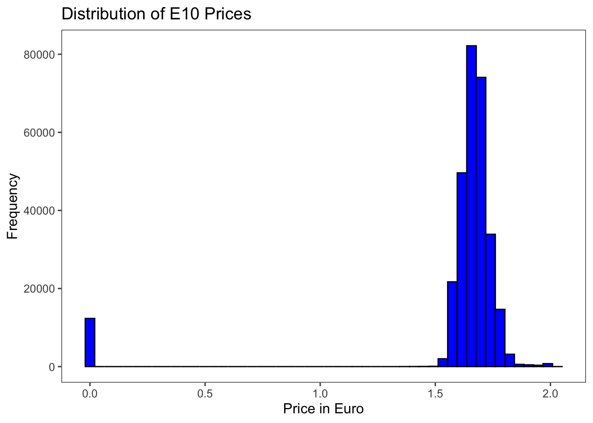
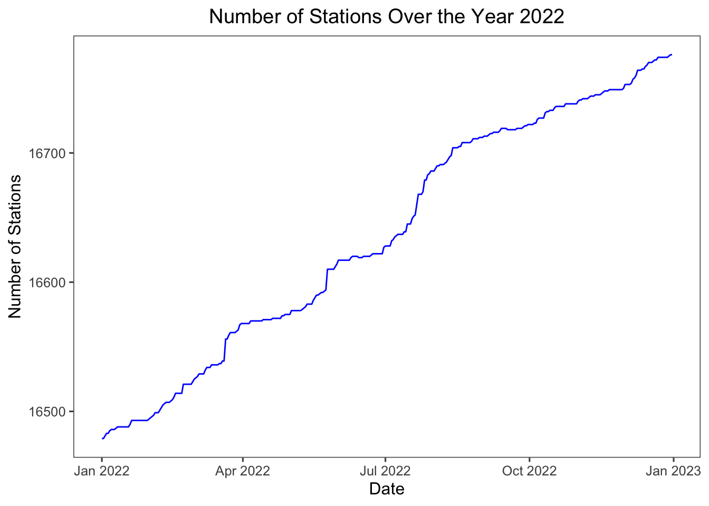
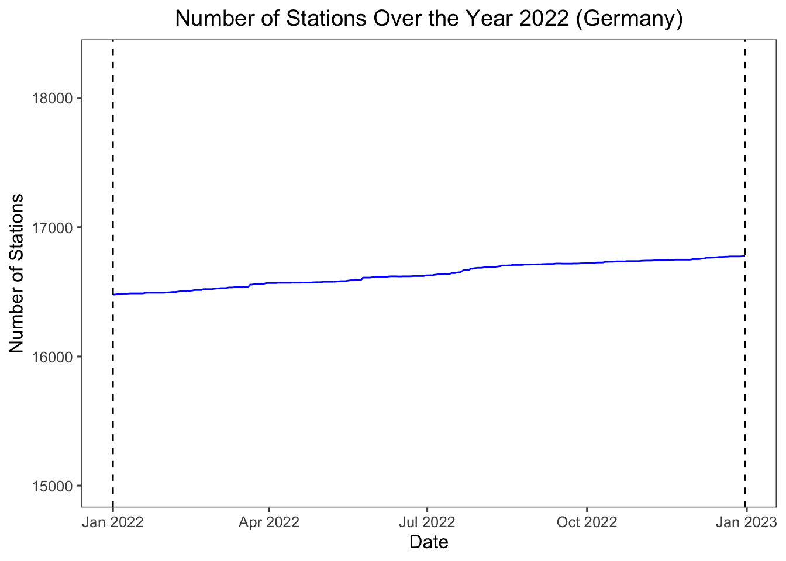
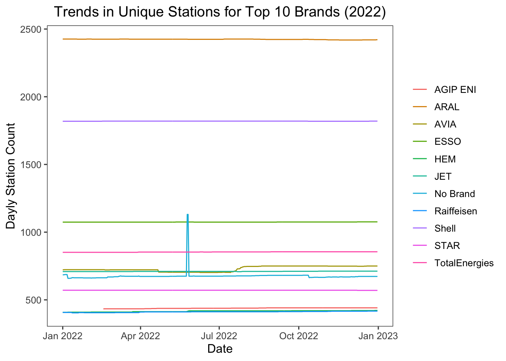

Data Preprocessing
Overview
This script documents the loading, preprocessing and data exploration.
Loading Libraries
When rerunning the code, please make sure that all packages that will be loaded here are installed on your machine.
Directories
This project will be pushed to a remote repository on gitlab. Therefore, the the working directory is set in a relative way to minimize steps while rerunning the code.
Since this rendering quarto files requires an interactive RStudio environment, the normal getActiveDocumentContext() function will not allow any rendering. This is solved by requiring the rstudioapi package.
# set working directory to script location
if (requireNamespace("rstudioapi", quietly = TRUE) && rstudioapi::isAvailable()) {
setwd(dirname(rstudioapi::getActiveDocumentContext()$path))
}
# check if wd is the root directory
getwd() Tankerkönig
The remote repository from Tankerkönig (tankerkoenig) can be cloned using git clone. However, The hole repository takes up over 100GB storage and thus is too large for my machine. The repository contains daily price data for gas stations in Germany since June 2014. The fuel tax discount came into effect at 1. of June 2022 and ended 31. of August 2022 (3 month period). To test for parallel trends with neighboring country France, I decided to manually download the data for the entire year of 2022. The data structure is as follows: For every day, there are two corresponding files: prices.csv and stations.csv, which are stored in sub directories of the data folder. The prices.csv file contains the prices and price changes for every gas station in Germany. The stations.csv file contains the metadata for every corresponding gas station in Germany. I have experimented with iteratively reading and binding the price data. However, the high observation count always results in memory overload (one single day contains between 200,000 to 300,000 observations). For adapting the approach of Frondel, Thiel, and Vance (2024), only daily averages will be needed. Therefore, I first calculate the daily averages and then merge the data, to make computations possible. The first step is to find a way to calculate daily price averages per station for one day, before implementing an iterative approach to do it for all days in the period of interest. First, there will be a small working example.
Small Working Example
Loading Data
# move up to project root and read data from data subfolder
df <- fread("../Data/Tankerkoenig/prices/2022/01/2022-01-01-prices.csv")Data Preprocessing
Now, let’s explore the data. First, the date variable is not correctly read by default and needs to be corrected to German time zone:
# Convert the 'date' column to POSIXct and handle time zone
df$date <- as.POSIXct(df$date,
format = "%Y-%m-%d %H:%M:%S%z",
tz = "Europe/Berlin")Some data exploration:
[1] 13913# Show variable types
str(df)Classes 'data.table' and 'data.frame': 295973 obs. of 8 variables:
$ date : POSIXct, format: "2022-01-01 00:00:09" "2022-01-01 00:00:09" ...
$ station_uuid: chr "5b9216c3-a1bb-4e15-929b-696b8d9fbbf4" "3e8b54ba-efd2-48ea-b948-7104f540d930" "450457dd-f5a1-4f87-a3b9-019c13bdbbca" "4a979b8a-98bb-4e67-b85b-744b5de70e80" ...
$ diesel : num 1.56 1.56 1.52 1.55 1.56 ...
$ e5 : num 1.73 1.72 1.69 1.71 1.68 ...
$ e10 : num 1.67 1.66 1.63 1.65 1.64 ...
$ dieselchange: int 1 1 1 1 1 1 0 1 1 1 ...
$ e5change : int 1 0 0 1 1 1 1 1 1 1 ...
$ e10change : int 1 0 0 1 1 0 1 0 1 1 ...
- attr(*, ".internal.selfref")=<externalptr> date station_uuid diesel e5 e10 dieselchange
0 0 0 0 0 0
e5change e10change
0 0 # summary statistics
summary(df) date station_uuid diesel
Min. :2022-01-01 00:00:09.00 Length:295973 Min. :0.000
1st Qu.:2022-01-01 10:24:08.00 Class :character 1st Qu.:1.549
Median :2022-01-01 13:52:11.00 Mode :character Median :1.579
Mean :2022-01-01 13:55:58.71 Mean :1.582
3rd Qu.:2022-01-01 17:49:08.00 3rd Qu.:1.619
Max. :2022-01-01 23:58:13.00 Max. :1.939
e5 e10 dieselchange e5change
Min. :0.000 Min. :-0.001 Min. :0.0000 Min. :0.000
1st Qu.:1.689 1st Qu.: 1.629 1st Qu.:1.0000 1st Qu.:1.000
Median :1.729 Median : 1.659 Median :1.0000 Median :1.000
Mean :1.708 Mean : 1.603 Mean :0.8098 Mean :0.804
3rd Qu.:1.769 3rd Qu.: 1.709 3rd Qu.:1.0000 3rd Qu.:1.000
Max. :2.089 Max. : 2.029 Max. :3.0000 Max. :3.000
e10change
Min. :0.0000
1st Qu.:1.0000
Median :1.0000
Mean :0.7809
3rd Qu.:1.0000
Max. :3.0000 Data Cleaning
What about those observations where the price is negative? The Value should represent an actual price, not a price change. How can this be explained?
# create histogram of distribution of diesel prices
ggplot(df, aes(x = diesel)) +
geom_histogram(bins = 50, fill = "blue", color = "black") +
labs(title = "Distribution of Diesel Prices",
x = "Price in Euro",
y = "Frequency") +
theme_few()
# create histogram of distribution of e10 prices
ggplot(df, aes(x = e10)) +
geom_histogram(bins = 50, fill = "blue", color = "black") +
labs(title = "Distribution of E10 Prices",
x = "Price in Euro",
y = "Frequency") +
theme_few()
# subset the weird observations
weird_obs <- df %>% filter(diesel == -0.001 |
e10 == -0.001)
head(weird_obs, 3) date station_uuid diesel e5 e10
<POSc> <char> <num> <num> <num>
1: 2022-01-01 05:55:16 62edbe52-684e-43fb-8096-39e943ae6fc7 1.479 1.689 -0.001
2: 2022-01-01 06:20:10 62edbe52-684e-43fb-8096-39e943ae6fc7 1.479 1.679 -0.001
3: 2022-01-01 06:55:09 62edbe52-684e-43fb-8096-39e943ae6fc7 1.589 1.739 -0.001
dieselchange e5change e10change
<int> <int> <int>
1: 1 1 0
2: 0 1 0
3: 1 1 0Check if there is a pattern to the stations with such observations:
# give station ids
unique(weird_obs$station_uuid)[1] "62edbe52-684e-43fb-8096-39e943ae6fc7"# load station data for the corresponding day to learn more
df_stations <- fread("../Data/Tankerkoenig/stations/2022/01/2022-01-01-stations.csv")
# subset the stations with the weird observations
weird_stations <- df_stations %>%
filter(uuid %in% unique(weird_obs$station_uuid))
head(weird_stations, 3) uuid name brand
<char> <char> <char>
1: 62edbe52-684e-43fb-8096-39e943ae6fc7 Beatrix Betzer T
street house_number post_code city latitude longitude
<char> <char> <char> <char> <num> <num>
1: Ritter-Heinrich-Str. 2 56766 Ulmen 50.21377 6.97353
first_active
<POSc>
1: 2014-03-18 15:45:31
openingtimes_json
<char>
1: {""openingTimes"":[{""applicable_days"":31,""periods"":[{""startp"":""06:00"",""endp"":""21:00""}]},{""applicable_days"":32,""periods"":[{""startp"":""07:00"",""endp"":""21:00""}]},{""applicable_days"":64,""periods"":[{""startp"":""09:00"",""endp"":""21:00""}]}]}The variable openingtimes_json contains information on the opening times and will be handled later on. Another issues arises in the raw data. There seems to be no information on how these weird negative prices can be explained. Therefore, I will contact the data provider to get more information on this issue.
First, I also want to check if these weird observations correspond to the same stations at a different point in time. Therefore, I will check the (randomly chosen) date. 2022-07-12:
# price data for 2022-07-12
df_2022_test <- fread("../Data/Tankerkoenig/prices/2022/07/2022-07-12-prices.csv")
# load station data for the corresponding day to learn more
df_stations2022_test <- fread("../Data/Tankerkoenig/stations/2022/07/2022-07-12-stations.csv")
# correct time zone
df_2022_test$date <- as.POSIXct(df_2022_test$date,
format = "%Y-%m-%d %H:%M:%S%z",
tz = "Europe/Berlin")
# subset the weird observations
weird_obs_test <- df_2022_test %>% filter(diesel == -0.001 |
e10 == -0.001)
# give station ids
unique(weird_obs_test$station_uuid)[1] "23c485e9-303a-4c15-bf9b-81154b424ace"
[2] "625a3954-c04d-4a34-a051-9a374b0ab37a"# subset the stations with the weird observations
weird_stations_test <- df_stations2022_test %>%
filter(uuid %in% unique(weird_obs_test$station_uuid))
# display weird observations of 2021-01-01 and 2023-07-12
# 2021-01-01
head(weird_stations$name)[1] "Beatrix Betzer"# 2023-07-12
head(weird_stations_test$name)[1] "Raisa eG" "Braun Mineraloelvertrieb"The weird observations do not correspond to the same stations at different points in time.
The analysis will only include diesel prices and E10 prices, hence, E5 prices should be omitted early on to save memory.
# remove the e5 variable using the data.table package
df <- df[, !"e5"]Daily Averages per Station
# Extract date only
unique_date <- as.Date(df$date[1],
tz = "Europe/Berlin")
# Group by station_uuid to calculate daily averages, and add the extracted unique date as a column
daily_averages <- df[, .(
avg_diesel = mean(diesel),
avg_e10 = mean(e10)
), by = station_uuid][, date_only := unique_date]
# View the result
head(daily_averages,
3) station_uuid avg_diesel avg_e10 date_only
<char> <num> <num> <Date>
1: 5b9216c3-a1bb-4e15-929b-696b8d9fbbf4 1.610176 1.713706 2022-01-01
2: 3e8b54ba-efd2-48ea-b948-7104f540d930 1.570176 1.673118 2022-01-01
3: 450457dd-f5a1-4f87-a3b9-019c13bdbbca 1.575000 1.669500 2022-01-01# count the number of observations of daily_averages
nrow(daily_averages)[1] 13913[1] 13913Save Data
getwd()
# Specify the subfolder
subfolder <- "../Data/Tankerkoenig/prices_avg"
# save unique date as string to name the saved .csv like that
unique_date_str <- as.character(unique_date)
# Define the full file path including filename
file_path <- file.path(subfolder, paste0(unique_date_str, "-avg-price-station.csv.gz"))
# Save the DataFrame to CSV
# write.csv(daily_averages,
# file = file_path,
# row.names = FALSE,
# fileEncoding = "UTF-8")
# now do the same using the fwrite function, since this is more efficient
fwrite(daily_averages,
file = file_path,
row.names = FALSE)To be sure, I test if the saved data can be loaded again and the variables are recocgnized correctly:
test <- fread(paste0("../Data/Tankerkoenig/prices_avg/", unique_date_str, "-avg-price-station.csv.gz"))
str(test)Classes 'data.table' and 'data.frame': 13913 obs. of 4 variables:
$ station_uuid: chr "5b9216c3-a1bb-4e15-929b-696b8d9fbbf4" "3e8b54ba-efd2-48ea-b948-7104f540d930" "450457dd-f5a1-4f87-a3b9-019c13bdbbca" "4a979b8a-98bb-4e67-b85b-744b5de70e80" ...
$ avg_diesel : num 1.61 1.57 1.57 1.59 1.56 ...
$ avg_e10 : num 1.71 1.67 1.67 1.68 1.64 ...
$ date_only : IDate, format: "2022-01-01" "2022-01-01" ...
- attr(*, ".internal.selfref")=<externalptr> head(test, 3) station_uuid avg_diesel avg_e10 date_only
<char> <num> <num> <IDat>
1: 5b9216c3-a1bb-4e15-929b-696b8d9fbbf4 1.610176 1.713706 2022-01-01
2: 3e8b54ba-efd2-48ea-b948-7104f540d930 1.570176 1.673118 2022-01-01
3: 450457dd-f5a1-4f87-a3b9-019c13bdbbca 1.575000 1.669500 2022-01-01Big Working Example
Stations Data
I start by merging the separate station data files, since I have not yet received information on the weird observations in the prices data and might want to change the approach to the data preprocessing.
# load the station data for day 1
df_stations_day1 <- fread("../Data/Tankerkoenig/stations/2022/01/2022-01-01-stations.csv")
# write a for loop that iterates over all days in the year 2022, taking the folder structure into account
# # create a list of all days in 2022
# days <- seq(as.Date("2022-01-01"), as.Date("2022-12-31"), by = "days")
#
# # create a list of all days in 2022 in the format of the folder structure
# days_str <- format(days, "%Y/%m/%Y-%m-%d")
#
# # create an empty data.table to store the station data
# df_stations <- data.table()
#
# # iterate over all days in 2022
# for (day in days_str) {
# # load the station data for the day
# df_stations_day <- fread(paste0("../Data/Tankerkoenig/stations/", day, "-stations.csv"))
#
# # add the date as a column
# df_stations_day[, date := as.Date(day, format = "%Y/%m/%Y-%m-%d")]
#
# # bind the data to the df_stations data.table
# df_stations <- rbind(df_stations, df_stations_day)
# }
# That worked fine, but took way too long. There is a more efficient way.
# More efficient way:
# Create a list of file paths for all days in 2022
days <- seq(as.Date("2022-01-01"), as.Date("2022-12-31"), by = "days")
file_paths <- sprintf("../Data/Tankerkoenig/stations/%s-stations.csv", format(days, "%Y/%m/%Y-%m-%d"))
# Use lapply to read all files into a list of data.tables
data_list <- lapply(seq_along(file_paths), function(i) {
dt <- fread(file_paths[i])
dt[, date := days[i]] # Add date column
return(dt)
})
# Combine all data.tables into one
df_stations <- rbindlist(data_list)
names(df_stations) [1] "uuid" "name" "brand"
[4] "street" "house_number" "post_code"
[7] "city" "latitude" "longitude"
[10] "first_active" "openingtimes_json" "date" There are many valuable information in this data.table. Some of the information will be disregarded in the following step, since the scale of this project does not allow for a detailed analysis of all variables. However, this should be kept in mind for future research. For understanding the complex nature of local competition in a more sophisticated way for example, the opening hours of a station could be a valuable variable to assess heterogeneous pricing patterns at different points of the day. The intuition would be that stations that have longer opening hours have higher market power at certain points of time (e.g. at night) and can thus charge higher prices. However, this is not the focus of this project and would not be in the scope of the course Applied Economics.
The following variables will be omitted:
streethouse_numberfirst_activeopeningtimes_json
# omit the variables above
df_stations <- df_stations[, -c("street", "house_number", "first_active", "openingtimes_json")]
# check the structure of the data
str(df_stations)Classes 'data.table' and 'data.frame': 6072560 obs. of 8 variables:
$ uuid : chr "0e18d0d3-ed38-4e7f-a18e-507a78ad901d" "44e2bdb7-13e3-4156-8576-8326cdd20459" "ad812258-94e7-473d-aa80-d392f7532218" "ca0b70a2-764b-4682-9c05-cad5af09833e" ...
$ name : chr "OIL! Tankstelle München" "bft Tankstelle" "bft Bonn-Bad Godesberg" "Shell Steinen Hoellstein Landstr. 19 A" ...
$ brand : chr "OIL!" "" "bft" "Shell" ...
$ post_code: chr "80999" "36304" "53175" "79585" ...
$ city : chr "München" "Alsfeld" "Bonn" "Steinen Hoellstein" ...
$ latitude : num 48.2 50.8 50.7 47.6 49.4 ...
$ longitude: num 11.46 9.28 7.14 7.75 7.01 ...
$ date : Date, format: "2022-01-01" "2022-01-01" ...
- attr(*, ".internal.selfref")=<externalptr> Now let’s better understand the data and it’s structure. First, I would like to know how many stations are there on the first day of the year, then I would like to know how many stations were there on the last day of the year.
# Find the station count on day one using the date variable and the uuid:
unique(df_stations[date == as.Date("2022-01-01"), .N, by = uuid]) uuid N
<char> <int>
1: 0e18d0d3-ed38-4e7f-a18e-507a78ad901d 1
2: 44e2bdb7-13e3-4156-8576-8326cdd20459 1
3: ad812258-94e7-473d-aa80-d392f7532218 1
4: ca0b70a2-764b-4682-9c05-cad5af09833e 1
5: 867d88b1-9326-4727-87ae-2458ee4317a3 1
---
16475: ede8ba53-6d2e-4422-98bc-5aade7bb2818 1
16476: 229b5129-b115-55ce-bd9b-dcee6231d624 1
16477: 2e301163-a54e-4755-9af2-86e0851b6b8c 1
16478: 292c5218-4398-11ec-8abb-005056a27fa7 1
16479: f7ac36f9-4397-11ec-8abb-005056a27fa7 1# Count of unique stations on the first day of the year
stations_day1 <- df_stations[date == as.Date("2022-01-01"), .N, by = uuid][, .N]
# Count of unique stations on the last day of the year
stations_day_last <- df_stations[date == as.Date("2022-12-31"), .N, by = uuid][, .N]
# Print results
cat("Number of stations on the first day of the year:", stations_day1, "\n")Number of stations on the first day of the year: 16479 cat("Number of stations on the last day of the year:", stations_day_last, "\n")Number of stations on the last day of the year: 16776 # Calculate total difference:
cat("Total difference in stations: +", stations_day_last - stations_day1, "\n")Total difference in stations: + 297 After this, I would even like to know more about the fluctuations in the number of stations over the year, to test the argument that stations (and also competition) is relevantly constant over time. This can only be the case, if there are not many fluctuations. Therefore, I calculate the number of stations for every day in the year 2022 and plot the results using ggplot2.
# Calculate the number of unique stations per day
stations_over_year <- df_stations[
date >= as.Date("2022-01-01") & date <= as.Date("2022-12-31"),
.(num_stations = uniqueN(uuid)),
by = date
]
# Plot the results
ggplot(stations_over_year, aes(x = date, y = num_stations)) +
geom_line(color = "blue") +
labs(
title = "Number of Stations Over the Year 2022",
x = "Date",
y = "Number of Stations"
) +
theme_few() +
theme(
plot.title = element_text(hjust = 0.5)
)
# let's add dashed lines at the beginning of the year and the end of the year and scale the plot a bit differently
# Add dashed lines and adjust the y-axis scale
ggplot(stations_over_year, aes(x = date, y = num_stations)) +
geom_line(color = "blue") +
geom_vline(xintercept = as.Date("2022-01-01"),
linetype = "dashed",
color = "black") +
geom_vline(xintercept = as.Date("2022-12-31"),
linetype = "dashed",
color = "black") +
scale_y_continuous(
limits = range(stations_over_year$num_stations) * c(0.9, 1.1),
expand = expansion(mult = c(0, 0))
) +
labs(
title = "Number of Stations Over the Year 2022 (Germany)",
x = "Date",
y = "Number of Stations"
) +
theme_few() +
theme(
plot.title = element_text(hjust = 0.5)
)
How many brands are there in the data set? How are their numbers distributed?
[1] 1077# Distribution of the brands:
df_stations[, .N, by = brand][order(-N)] brand N
<char> <int>
1: ARAL 884676
2: Shell 664183
3: ESSO 392172
4: TotalEnergies 311490
5: AVIA 266275
---
1073: Burger Tankstelle 2
1074: KÖHN & PLAMBECK GmbH & Co. KG 1
1075: KÖHN & PLAMBECK (Tankautomat) 1
1076: Tankstelle Nordgarage 1
1077: Sb-Tanken 1# Identify the top 10 brands based on the total observations and save them in a variable
top_brands <- df_stations[, .N, by = brand][order(-N)][1:10, brand]
# Calculate the number of unique stations (UUIDs) for each top brand
top_brands_stations <- df_stations[
brand %in% top_brands,
.(unique_stations = uniqueN(uuid)),
by = brand
][order(-unique_stations)]
# Print the results
print(top_brands_stations) brand unique_stations
<char> <int>
1: ARAL 2431
2: Shell 1821
3: 1193
4: ESSO 1077
5: TotalEnergies 856
6: AVIA 777
7: JET 712
8: STAR 571
9: Raiffeisen 422
10: HEM 422Here it can be seen that the third most common brand is simply shown an empty string in the variable brand, implying that there are 1193 stations that are not owned by a brand. In what follows, I assign these stations the brand name “No Brand”. Furthermore, I repeat the steps from above searching for the top 11 brands, to identify the actual top 10 brands (No Brand excluded).
# Assign the stations in with an empty brand name the brand name "No Brand"
# currently there is simply an empty string in the variable brand
df_stations[brand == "", brand := "No Brand"]
# Count the number of unique brands in the data
unique(df_stations$brand) %>% length()[1] 1077# Identify the top 11 brands based on the total observations and save them in a variable
top_brands <- df_stations[, .N, by = brand][order(-N)][1:11, brand]
# Calculate the number of unique stations (UUIDs) for each top brand
top_brands_stations <- df_stations[
brand %in% top_brands,
.(unique_stations = uniqueN(uuid)),
by = brand
][order(-unique_stations)]
# Print the results
print(top_brands_stations) brand unique_stations
<char> <int>
1: ARAL 2431
2: Shell 1821
3: No Brand 1193
4: ESSO 1077
5: TotalEnergies 856
6: AVIA 777
7: JET 712
8: STAR 571
9: AGIP ENI 441
10: Raiffeisen 422
11: HEM 422Now, how do the fluctuations of station counts look across the top brand? Are there any brands that actively whiden their market share in terms of stations?
# Calculate daily unique station counts for top 10 brands
brand_station_trends <- df_stations[
brand %in% top_brands,
.(num_stations = uniqueN(uuid)),
by = .(brand, date)
]
ggplot(brand_station_trends, aes(x = date, y = num_stations, color = brand)) +
geom_line() +
labs(
title = "Trends in Unique Stations for Top 10 Brands (2022)",
x = "Date",
y = "Dayly Station Count"
) +
theme_few() +
theme(
plot.title = element_text(hjust = 0.5),
legend.title = element_blank()
)
What’s up with this peak of stations for the brand “No Brand” in the middle of the year? Let’s find out:
# Find the date of the peak for the brand "No Brand"
df_stations[brand == "No Brand", .(num_stations = uniqueN(uuid)), by = date][order(-num_stations)][1] date num_stations
<Date> <int>
1: 2022-05-25 1131# subset the count data for all stations of the brand "No Brand" over the year
no_brand_stations <- df_stations[brand == "No Brand", .(num_stations = uniqueN(uuid)), by = date]
# The count of stations is relatively stable, exept for the dates 2022-05-25 and 2022-05-26. Why is this?
# create a data.table with all observations of df_stations for the dates 2022-05-25 and 2022-05-26
df_05_25_05_26 <- df_stations[date %in% as.Date(c("2022-05-25", "2022-05-26"))]
# Are the number of observation in total higher on these two days then the days around them?
# The two weird candidates
df_05_25 <- df_stations[date %in% as.Date("2022-05-25")]
df_05_26 <- df_stations[date %in% as.Date("2022-05-26")]
# The day before and after
df_05_24 <- df_stations[date %in% as.Date("2022-05-24")]
df_05_27 <- df_stations[date %in% as.Date("2022-05-27")]
# Count the number of observations for each day
nrow(df_05_24)[1] 16594nrow(df_05_25)[1] 16610nrow(df_05_26)[1] 16610nrow(df_05_27)[1] 16610# How can this be
# Compare 2022-05-26 with 2022-05-27
df_05_26_27 <- df_stations[date %in% as.Date(c("2022-05-26", "2022-05-27"))]
# count the number of "no brand" stations for each day
df_05_26_27[brand == "No Brand", .N, by = date] date N
<Date> <int>
1: 2022-05-26 1131
2: 2022-05-27 675# If the Number of observations for both days are the same and one day prior there where more stations that are assigned to "no brand", then it means that some stations are actually of a brand and it is not recorded in the data. This can be traced back later on using the uuid. But first, I need to identify the stations that are assigned to "no brand" on 2022-05-26 disappear from that brand assignment on the next day:
# Extract the UUIDs of "No Brand" stations for both days
no_brand_26 <- df_stations[date == as.Date("2022-05-26") & brand == "No Brand", unique(uuid)]
no_brand_27 <- df_stations[date == as.Date("2022-05-27") & brand == "No Brand", unique(uuid)]
# Find stations in "No Brand" on 2022-05-26 but not on 2022-05-27
disappeared_stations <- setdiff(no_brand_26, no_brand_27)
# disappeared_stations has a lengh of 456 (1131 - 675)
# Extract data for these stations for both days to investigate further
disappeared_data <- df_stations[
uuid %in% disappeared_stations & date %in% as.Date(c("2022-05-26", "2022-05-27"))
]
# Check brand assignment for these stations on 2022-05-27
Stations_that_changed <- df_stations[uuid %in% disappeared_stations & date == as.Date("2022-05-27"), .(uuid, brand, city)]
# give counts of the brands in Stations_that_changed
Stations_that_changed[, .N, by = brand] brand N
<char> <int>
1: HEM 419
2: TAMOIL 14
3: SB 7
4: GO 15
5: Supermarkt 1# show cities that were affected of the probable data error
unique(Stations_that_changed$city) [1] "Güstrow" "Grönwohld"
[3] "Gröningen" "Grevenbroich"
[5] "Haldensleben" "Goldberg"
[7] "Gnoien" "Gifhorn"
[9] "Giesen" "Geldern"
[11] "Geesthacht" "Garbsen"
[13] "Gägelow" "Fürstenau"
[15] "Elmshorn" "Elbingerode"
[17] "Eimke" "Dortmund"
[19] "Demmin" "Dahlen"
[21] "Burgdorf" "Bredstedt"
[23] "Braunschweig" "Boppard"
[25] "Bodenwerder" "Bernburg"
[27] "Berlin" "Bergkamen"
[29] "Admannshagen-Bargeshagen" "Baddeckenstedt"
[31] "Bad Salzdetfurth" "Bad Lauterberg"
[33] "Bad Langensalza" "Arnsdorf"
[35] "Aken" "Hamburg"
[37] "Hamdorf" "Hannover"
[39] "Harsefeld" "Hechthausen"
[41] "Hildesheim" "Holzendorf"
[43] "Bad Bergzabern" "Ketzin"
[45] "Korschenbroich" "Gardelegen"
[47] "Loitz" "Ludwigslust"
[49] "Lychen" "Magdeburg"
[51] "Meyenburg" "Premnitz"
[53] "Neukloster" "Neustadt in Holstein"
[55] "Neustadt-Glewe" "Königs Wusterhausen"
[57] "Nienburg" "Northeim"
[59] "Oberlungwitz" "Parchen"
[61] "Peine" "Penzlin"
[63] "Schmölln-Putzkau" "Querfurt"
[65] "Ribnitz-Damgarten" "Reuterstadt Stavenhagen"
[67] "Salzgitter" "Schellerten"
[69] "Schleiz" "Schlieben"
[71] "Schönberg" "Schöneiche"
[73] "Schwaan" "Panketal"
[75] "Schwerin" "Seelze"
[77] "Soest" "Tessin"
[79] "Stadthagen" "Torgelow"
[81] "Ueckermünde" "Uelzen"
[83] "Teupitz" "Unna"
[85] "Velten" "Walkenried"
[87] "Wandlitz" "Wentorf"
[89] "Werne" "Westerrönfeld"
[91] "Wildeshausen" "Wittstock"
[93] "Wolgast" "Schwieberdingen"
[95] "Breisach" "Saarbrücken"
[97] "Kirchzarten" "Bensheim"
[99] "Freiburg" "GroÃ\u009fenkneten"
[101] "Norderstedt" "Augsburg"
[103] "Castrop-Rauxel" "Herne"
[105] "Kraiburg" "München"
[107] "Witten" "Neustrelitz"
[109] "Menden" "Gera"
[111] "Kummerfeld" "Gelsenkirchen"
[113] "Bargteheide" "Kiel"
[115] "Gotha" "Heidenheim"
[117] "Xanten" "Essen"
[119] "Haltern am See" "Regensburg"
[121] "Marktheidenfeld" "Leverkusen"
[123] "Mainz" "Nattheim"
[125] "Bergisch Gladbach" "Mönchengladbach"
[127] "Bochum" "Nürnberg"
[129] "Wuppertal" "Ã\u009cberlingen"
[131] "Nierstein" "Pirna"
[133] "Dorf Mecklenburg" "Hohen Neuendorf"
[135] "Lutherstadt Wittenberg" "Rauenberg"
[137] "Schwäbisch Gmünd" "Beverstedt"
[139] "Ritterhude" "Bremen"
[141] "Rimbach" "Brünzow"
[143] "Glinde" "Pfungstadt"
[145] "Bad Honnef" "Bonn"
[147] "Eitorf" "Windeck"
[149] "Baden-Baden" "Müllheim"
[151] "Griesheim" "Lüneburg"
[153] "Ehningen" "Oberursel"
[155] "Schönaich" "Würzburg"
[157] "Crailsheim" "Schwabach"
[159] "Bergheim" "Mannheim"
[161] "Bad Harzburg" "Ebhausen"
[163] "Hanau" "Limburg"
[165] "Thaleischweiler-Fröschen" "Frankfurt"
[167] "Stuttgart" "Hockenheim"
[169] "Ludwigshafen" "Villingen-Schwenningen"
[171] "Kornwestheim" "Neuötting"
[173] "Zwickau" "Leipzig"
[175] "Lübben" "Neubrandenburg"
[177] "Ulm" "Siegen"
[179] "Torgau" "Helmstedt"
[181] "Weimar" "Schönefeld"
[183] "Bernburg (Saale)" "Brandenburg"
[185] "Aerzen" "Bückeburg"
[187] "Calberlah" "Drübeck"
[189] "Egeln" "Eicklingen"
[191] "Einbeck" "Jerichow"
[193] "Meine" "Nordstemmen"
[195] "Schladen" "Hecklingen"
[197] "Sehnde" "Springe"
[199] "Uetze" "UnterlüÃ\u009f"
[201] "Thale" "Wolfenbüttel"
[203] "Alfeld" "Burgwedel"
[205] "Celle" "Grasleben"
[207] "Hessisch Oldendorf" "Langenhagen"
[209] "Lindhorst" "Vechelde"
[211] "Querenhorst" "Bendestorf"
[213] "Biederitz" "Bremerhaven"
[215] "Chemnitz" "Clausthal-Zellerfeld"
[217] "Datteln" "Eisenach"
[219] "Friedberg" "Goslar"
[221] "Köthen" "Munster"
[223] "Oststeinbek" "Pinneberg"
[225] "Schwetzingen" "Bad Driburg"
[227] "Lünen" "Kritzow"
[229] "Irxleben" "Edenkoben"
[231] "Dettingen unter Teck" "Mühltal"
[233] "Düsseldorf" "Kleinheubach"
[235] "Gadebusch" "Lichtenau"
[237] "Wedel" "Bad Frankenhausen"
[239] "Kaaks" "Dardesheim"
[241] "StaÃ\u009ffurt" "Stuhr"
[243] "Brokenlande" "Dresden"
[245] "Parchim" "Eggesin"
[247] "Bitterfeld" "Zeven"
[249] "Sinsheim" "Rostock"
[251] "Eime" "Engen"
[253] "Wilhelmshaven" "Lübeck"
[255] "Westerstede" "Erfurt"
[257] "Gelnhausen" "Doberschütz"
[259] "Bitterfeld-Wolfen" "Laage"
[261] "Wolfsburg" "Anklam"
[263] "Grammetal OT Nohra" "Burg"
[265] "Ratzeburg" "Löffingen"
[267] "Eberswalde" "Ahlen"
[269] "Bielefeld" "Hagen"
[271] "Harsewinkel" "Seesen"
[273] "Hamm" "Salzwedel"
[275] "Ziesar" "Kritzmow"
[277] "Heilbad Heiligenstadt" "Gräfenhainichen"
[279] "Beckdorf" "Bad Oldesloe"
[281] "Altmittweida" "Schönwalde"
[283] "Burg Stargard" "Lübbenau"
[285] "Potsdam" "Parey"
[287] "Goch" "Kreuzwertheim"
[289] "Kaiserslautern" "Lohne"
[291] "Donaueschingen" "Marktsteft"
[293] "Rockenhausen" "Dillingen a. d. Donau"
[295] "Georgsmarienhütte" "Bad Sassendorf"
[297] "Rottach-Egern" "Lonsee"
[299] "Mössingen" "Marbach am Neckar"
[301] "Oerlenbach" "Nürnberg-Schweinau"
[303] "Cremlingen" "Möttingen"
[305] "Markdorf" "Ã\u009cbersee"
[307] "Wolnzach" "Wassenberg"
[309] "Jork" "DeiÃ\u009flingen"
[311] "Erbach" "Jena"
[313] "Kirchheimbolanden" "Witzenhausen"
[315] "Bad Salzuflen" "Kolbermoor"
[317] "Velbert" "Gründau"
[319] "Backnang" "Werther"
[321] "Murr" "Weinheim"
[323] "Meerane" "Hollenstedt"
[325] "Ubstadt-Weiher" "Kaufbeuren"
[327] "Schmidgaden-Trisching" "Schifferstadt"
[329] "Ertingen" "Holzgerlingen"
[331] "Ebersdorf" "Titisee-Neustadt"
[333] "Seukendorf" "Langerwehe"
[335] "Lindenberg" "Sengenthal"
[337] "Straubing" "Gau-Algesheim"
[339] "Eislingen/Fils" "Altlandsberg OT Bruchmühle"
[341] "Plattling" "Selm"
[343] "Osnabrück" "Rottendorf"
[345] "Bühl" "Laatzen"
[347] "Frankenthal" "Bad Mergentheim"
[349] "Leck" "Barsinghausen"
[351] "Hollern Twielenfleth" "Bayreuth"
[353] "Wesenberg" "Schwarmstedt"
[355] "Alsleben" "Langelsheim"
[357] "Tangermünde" "Marl"
[359] "Osterode" "Schlangen" # There seems to be no pattern, at least not directlyA short assessment does not show any pattern to why there are some stations that are assigned to “No Brand” on 2022-05-26 and are assigned to a brand on 2022-05-27. It is likely an error in the raw data. Further research could asses this in more detail, plotting a map of the stations that are affected, maybe revealing any spatial patterns. This is however not important for the further assessment of my research question and can therefore be disregarded.
Prix des carburants en France
Small Working Example
Loading Data
# getwd()
# # load the data
# df_FRA <- fread("../Data/Prix-des-carburants/prix-des-carburants-en-france-flux-instantane-v2.csv")
#
# df_FRA2 <- fread("../Data/Prix-des-carburants/prix-des-carburants-en-france-flux-instantane-v3.csv")
#
# # library(jsonlite)
# json_data <- fromJSON("../Data/Prix-des-carburants/prix-des-carburants-en-france-flux-instantane-v2.json", flatten = TRUE)
#
# str(json_data)
#
# dt <- as.data.table(json_data)
#
# str(dt)Cleaning Data
# give a list of the variable names
# names(df_FRA)
#
# # Aim: Clean rename the colums to English
#
# # Convert the data frame to a data.table for efficiency
# setDT(df_FRA)
#
# # Rename columns
# setnames(df_FRA,
# old = c("id", "latitude", "longitude", "Code postal", "pop", "Adresse",
# "Ville", "services", "prix", "rupture", "horaires", "geom",
# "Prix Gazole mis à jour le", "Prix Gazole",
# "Prix SP95 mis à jour le", "Prix SP95",
# "Prix E85 mis à jour le", "Prix E85",
# "Prix GPLc mis à jour le", "Prix GPLc",
# "Prix E10 mis à jour le", "Prix E10",
# "Prix SP98 mis à jour le", "Prix SP98",
# "Début rupture e10 (si temporaire)", "Type rupture e10",
# "Début rupture sp98 (si temporaire)", "Type rupture sp98",
# "Début rupture sp95 (si temporaire)", "Type rupture sp95",
# "Début rupture e85 (si temporaire)", "Type rupture e85",
# "Début rupture GPLc (si temporaire)", "Type rupture GPLc",
# "Début rupture gazole (si temporaire)", "Type rupture gazole",
# "Carburants disponibles", "Carburants indisponibles",
# "Carburants en rupture temporaire", "Carburants en rupture definitive",
# "Automate 24-24 (oui/non)", "Services proposés",
# "Département", "code_departement", "Région", "code_region",
# "horaires détaillés"),
# new = c("id", "latitude", "longitude", "postal_code", "population",
# "address", "city", "services", "price", "out_of_stock",
# "hours", "geometry", "diesel_price_updated_on", "diesel_price",
# "SP95_price_updated_on", "SP95_price", "E85_price_updated_on",
# "E85_price", "GPLc_price_updated_on", "GPLc_price",
# "E10_price_updated_on", "E10_price", "SP98_price_updated_on",
# "SP98_price", "E10_out_of_stock_start", "E10_out_of_stock_type",
# "SP98_out_of_stock_start", "SP98_out_of_stock_type",
# "SP95_out_of_stock_start", "SP95_out_of_stock_type",
# "E85_out_of_stock_start", "E85_out_of_stock_type",
# "GPLc_out_of_stock_start", "GPLc_out_of_stock_type",
# "diesel_out_of_stock_start", "diesel_out_of_stock_type",
# "available_fuels", "unavailable_fuels",
# "temporarily_out_of_stock_fuels", "permanently_out_of_stock_fuels",
# "self_service_24_7", "offered_services", "department",
# "department_code", "region", "region_code", "detailed_hours"))
#
#
# # check the structure of the data
# str(df_FRA)
#
#
# # clear environment
# rm(list = ls())Prix des carburants en France XML
# XML-Datei einlesen
xml_data <- read_xml("../Data/Prix-des-carburants/2022/PrixCarburants_annuel_2022.xml")
# XML-Struktur anzeigen
# xml_structure(xml_data)
# XML-Datei in ein Dataframe umwandeln
# xml_df <- as_data_frame(xml_data)
# df <- xmlToDataFrame(nodes = getNodeSet(xml_data))
# extract pdv_liste
test <- xml_data %>% xml_find_all("//pdv_liste/pdv")